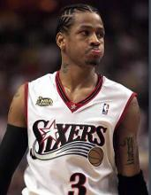
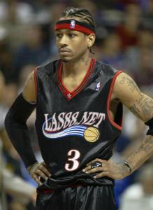
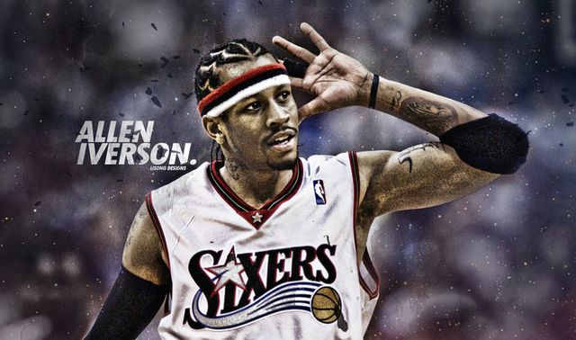

球星介绍 |
|
中文名： 阿伦・埃泽尔・艾弗森
外文名： Allen Ezail Iverson
出生地 ： 弗吉尼亚州汉普顿
毕业院校：汉普顿高中、乔治敦大学
体重： 74.8公斤/165磅
身高： 1.83米/6英尺0英寸
粤语地区译名： 阿伦・艾化臣
重要事件： 状元秀身份加盟费城76人(96-06) 丹佛掘金队(2006-2008) 底特律活塞队(2008-2009) 孟菲斯灰熊队(2009) 重回费城76人(2009)
主要奖项： NCAA大东部最佳新秀(1996年) NBA最佳新秀(1997年) NBA最有价值球员(2001年) NBA得分王(99、01、02、05) NBA全明星赛最有价值球员(01 05 |
阿伦・艾弗森
 阿伦・艾弗森（Allen Iverson），1975年6月7日出生于美国弗吉尼亚州汉普顿，[1]前美国职业篮球运动员，司职后卫（双能卫），曾11次入选NBA全明星阵容，曾任美国男篮梦之队队长。原地净弹跳高度达到40.5英�迹�助跑净弹跳高度更是达到了45英寸（即114cm左右）。
1996年6月26日被费城76人队选中，成为NBA历史上最矮的状元秀。场均获得26.7分、6.2次助攻和2.2次抢断。在季后赛生涯中，艾弗森场均轰下29.7分、6次助攻和2.1次 抢断。00-01赛季，艾弗森打出了生涯最强表现，夺得了个人唯一一座常规赛MVP奖杯，并帮助76队打入NBA总决赛。2013年10月31日凌晨，阿伦-艾弗森在费城正式宣布退役。
2015年7月，阿伦・艾弗森获得第一届球员工会奥斯卡-罗伯特森奖。
2015年12月22号，阿伦-艾弗森已被正式提名为2016年名人堂候选人。
2016年1月22日，阿伦・艾弗森获2016年NBA全明星赛第七名。
2016年4月4日，入选2016年奈・史密斯篮球名人纪念堂。
生涯简介

艾弗森是NBA继里奇・巴尔德和伊塞亚・托马斯之后的又一个“传奇小个子”，他变向过人速度之快，甚至造成防守队员骨折；他的弹跳之高，往往使人们看到内线队员给这个后卫传球空中接力。他曾击败奥 尼尔，荣膺乔丹退休后首位得分王。但这位90年代NBA的第一个状元后卫也有他十分叛逆的一面，他穿着前卫，与一些社会底层的黑人称兄道弟，他独特的“地垄沟”发型如今在美国的运动员、演艺界和普通黑人中都十分流行。他带领76人扭转了90年代初的颓势，成为了季后赛的常客，并带领球队于2000-01赛季杀入总决赛，最终不敌湖人队。